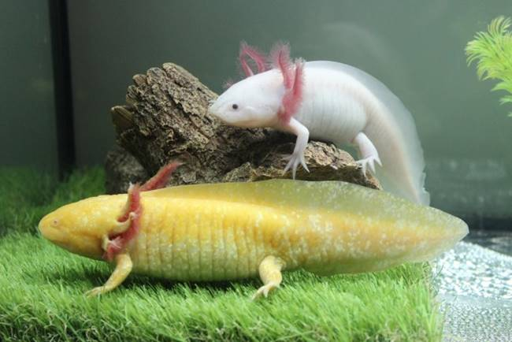
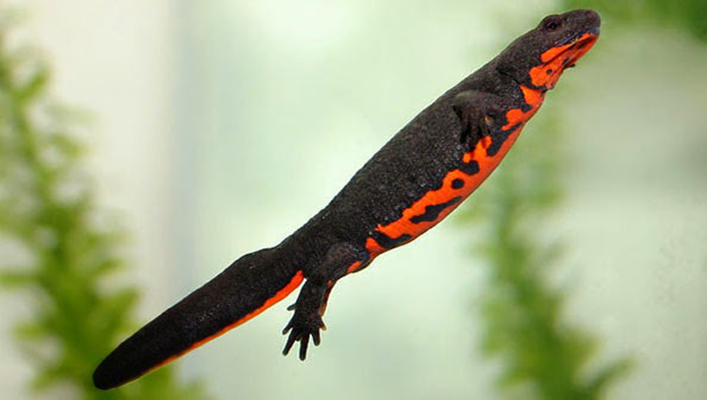

แอกโซลอเติล (Axolotl)

แอกโซลอเติลเป็นซาลาแมนเดอร์ขนาดเล็ก ที่มีถิ่นที่อยู่ค่อนข้างจำกัด โดยจะพบได้เฉพาะทะเลสาบหรือพื้นที่ชุ่มน้ำใกล้กับกรุงเม็กซิโกซิตี ประเทศเม็กซิโกเท่านั้น จุดเด่นของแอกโซลอเติลก็คือ มีพู่เหงือกสีแดงสดซึ่งเป็นอวัยวะช่วยในการหายใจ เมื่ออวัยวะไม่ว่าส่วนใดของร่างกายขาดหายไปจะสามารถซ่อมแซมตัวเองได้ ไม่ว่าจะเป็นอวัยวะภายนอกหรืออวัยวะสำคัญภายในร่างกาย เช่น หัวใจ ปอด นอกจากนี้แล้ว แอกโซลอเติลยังกลายเป็นสัตว์เลี้ยงของผู้นิยมเลี้ยงสัตว์แปลก ๆ อีกด้วย โดยนิยมเลี้ยงในตู้ปลาเช่นเดียวกับปลาสวยงามทั่วไป ในประเทศไทย บางครั้งแอกโซลอเติลจะถูกเรียกว่า "หมาน้ำ"
นิวต์ท้องแดง (Chinese fire belly newt)

เป็นนิวต์ขนาดเล็กมีลำตัวสีดำ ส่วนหางแบนเหมือนใบพาย มีช่วงท้องเป็นสีเหลืองมีแต้มสีส้มหรือแดง ตัวผู้มีขนาดเล็กกว่าตัวเมีย โดยตัวผู้จะมีปุ่มบริเวณโคนหาง จัดเป็นนิวต์ขนาดเล็กมีความยาวลำตัวจรดหางประมาณ 12-15 เซนติเมตร
แพร่กระจายพันธุ์ในพื้นที่ชุ่มน้ำที่น้ำสะอาดและบริสุทธิ์และมีพืชน้ำขึ้นหนาแน่นในตอนใต้ของประเทศจีน
นิวต์ท้องแดงจีน มีพิษบริเวณผิวหนังที่มีพิษประเภทเตโตรโดท็อกซิน (Tetrodotoxin) อันเป็นพิษแบบเดียวกับที่มีในปลาปักเป้า แต่เป็นพิษแบบอ่อน ซึ่งไม่ก่อให้เกิดอันตรายมากนักสำหรับมนุษย์หากใช้มือเปล่าไปแตะต้องถูกเข้า แต่จะเป็นอันตรายต่อเมื่อกลืนกินเข้าไป
เป็นนิวต์หรือซาลาแมนเดอร์อีกชนิดหนึ่ง ที่นิยมเลี้ยงกันเป็นสัตว์เลี้ยง